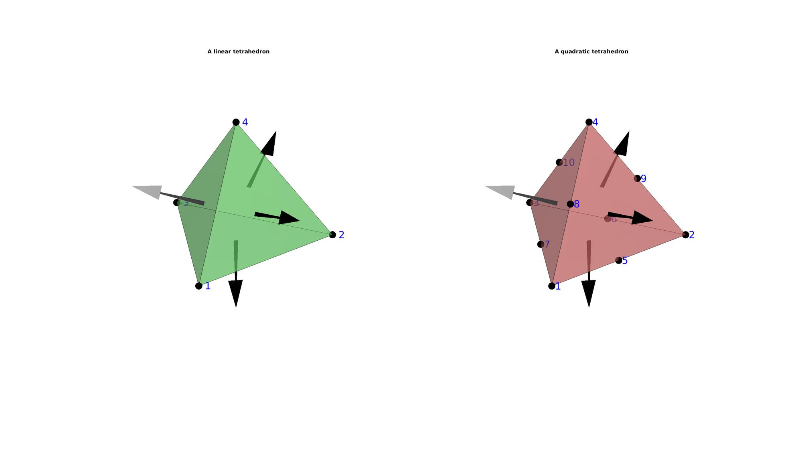
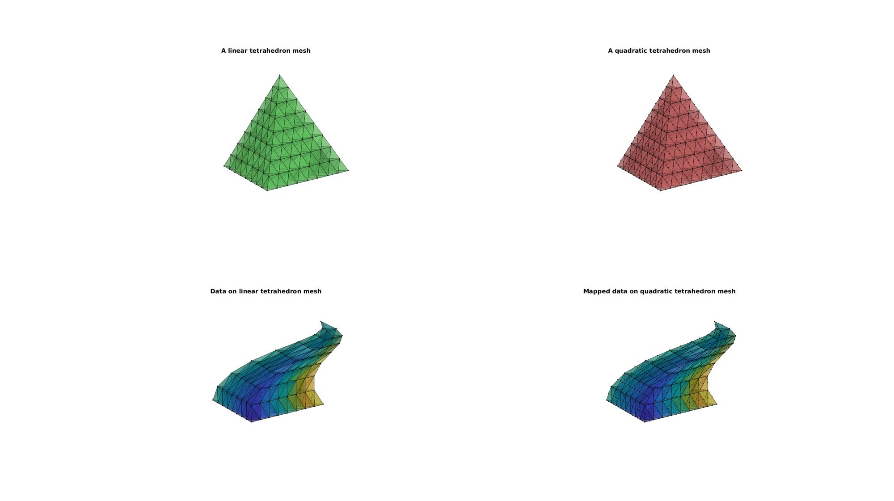
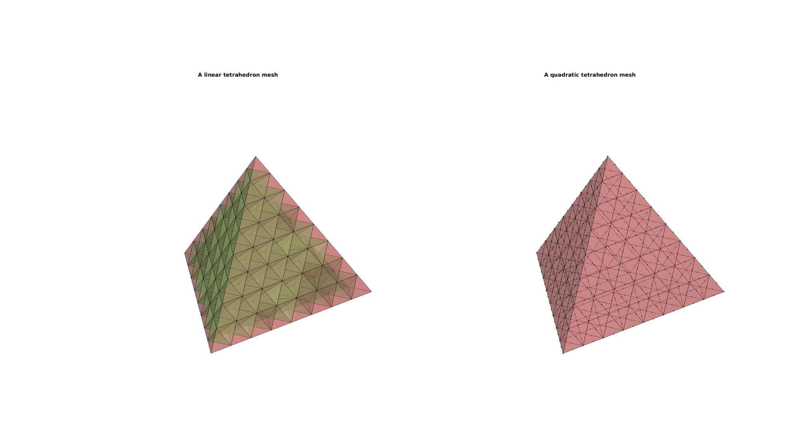

tet4_tet10
Below is a demonstration of the features of the tet4_tet10 function
Contents
Syntax
[E_tet10,V_tet10,V_tet10_cell,Fb_tet10,Fb_tet10_tri6]=tet4_tet10(E_tet4,V_tet4,V_tet4_cell,Fb_tet4);
Description
The tet4_tet10 converts 4-node tetrahedral elements to 10-node tetrahedral elements.
Examples
clear; close all; clc; % Plot settings fontSize=15; faceAlpha=0.5; edgeColor='k'; edgeWidth1=2; edgeWidth2=1; markerSize1=75; markerSize2=10;
CONVERSION FROM TET4 TO TET10, EXAMPLE FOR A SINGLE TETRAHEDRON
Creating a single 4-node tetrahedron
[V4,~]=platonic_solid(1,1); %q indicates solid type, r is the radius TET4=[1 2 4 3]; [F4,~]=element2patch(TET4,[],'tet4');
Converting to a single 10-node tetrahedron
[TET10,V10,~]=tet4_tet10(TET4,V4,{});
[F10,~]=element2patch(TET10,[],'tet10');
Plotting elements
cFigure; subplot(1,2,1); hold on; title('A linear tetrahedron','FontSize',fontSize); hp=gpatch(F4,V4,'gw','k',faceAlpha); hp.Marker='.'; hp.MarkerSize=markerSize1; patchNormPlot(F4,V4,0.75); %Plotting face normals for q=1:1:size(TET4,2) text(V4(TET4(1,q),1),V4(TET4(1,q),2),V4(TET4(1,q),3),[' ',num2str(q)],'FontSize',fontSize*2,'color','b'); end axisGeom(gca,fontSize); axis off; camlight('headlight'); lighting flat; subplot(1,2,2); hold on; title('A quadratic tetrahedron','FontSize',fontSize); hp=gpatch(F10,V10,'rw','k',faceAlpha); hp.Marker='.'; hp.MarkerSize=markerSize1; patchNormPlot(F10,V10,0.75); %Plotting face normals for q=1:1:size(TET10,2) text(V10(TET10(1,q),1),V10(TET10(1,q),2),V10(TET10(1,q),3),[' ',num2str(q)],'FontSize',fontSize*2,'color','b'); end axisGeom(gca,fontSize); axis off; camlight('headlight'); lighting flat; drawnow;
CONVERSION FROM TET4 TO TET10, EXAMPLE FOR A TETRAHEDRON MESH WITH NODAL PARAMETERS
n=3; for q=1:1:n [TET4,V4]=subTet(TET4,V4,1); end [F4,~]=element2patch(TET4,[],'tet4'); %Create nodal result e.g. displacement and color V4d=V4; V4d(:,1)=V4d(:,1)+0.5.*sin(pi*V4d(:,3)); V4d(:,2)=V4d(:,2)+0.5.*cos(pi*V4d(:,3)); D4=V4d-V4; C4=V4(:,1); %Color towards X
Converting to a single 10-node tetrahedron
tet4_cell={D4,C4};
[TET10,V10,tet10_cell]=tet4_tet10(TET4,V4,tet4_cell);
[F10,~]=element2patch(TET10,[],'tet10');
D10=tet10_cell{1};
C10=tet10_cell{2};
V10d=V10+D10;
Plotting elements
hf=cFigure; % Open figure for plotting subplot(2,2,1); hold on; title('A linear tetrahedron mesh','FontSize',fontSize); hp=gpatch(F4,V4,'gw','k',faceAlpha); hp.Marker='.'; hp.MarkerSize=markerSize2; axisGeom(gca,fontSize); axis off; view([-50,12]) camlight('headlight'); lighting flat; subplot(2,2,3); hold on; title('Data on linear tetrahedron mesh','FontSize',fontSize); hp=gpatch(F4,V4d,C4,'k',faceAlpha); hp.Marker='.'; hp.MarkerSize=markerSize2; axisGeom(gca,fontSize); axis off; view([-50,12]) camlight('headlight'); lighting flat; subplot(2,2,2); hold on; title('A quadratic tetrahedron mesh','FontSize',fontSize); hp=gpatch(F10,V10,'rw','k',faceAlpha); hp.Marker='.'; hp.MarkerSize=markerSize2; axisGeom(gca,fontSize); axis off; view([-50,12]) camlight('headlight'); lighting flat; subplot(2,2,4); hold on; title('Mapped data on quadratic tetrahedron mesh','FontSize',fontSize); hp=gpatch(F10,V10d,C10,'k',faceAlpha); hp.Marker='.'; hp.MarkerSize=markerSize2; axisGeom(gca,fontSize); axis off; view([-50,12]) camlight('headlight'); lighting flat; drawnow;
CONVERSION FROM TET4 TO TET10, EXAMPLE FOR KEEPING TRACK OF BOUNDARY FACES
[F4,~]=element2patch(TET4,[],'tet4'); [indBoundary]=tesBoundary(F4,V4); Fb4=F4(indBoundary,:); [TET10,V10,tet10_cell,Fb10]=tet4_tet10(TET4,V4,{},Fb4); [F10,~]=element2patch(TET10,[],'tet10'); % [indBoundary]=tesBoundary(F10,V10); % Fb10=F10(indBoundary,:);
hf=cFigure; % Open figure for plotting subplot(1,2,1); hold on; title('A linear tetrahedron mesh','FontSize',fontSize); gpatch(F4,V4,'gw','k',faceAlpha); gpatch(Fb4,V4,'rw','k',faceAlpha); axisGeom(gca,fontSize); axis off; camlight('headlight'); lighting flat; subplot(1,2,2); hold on; title('A quadratic tetrahedron mesh','FontSize',fontSize); hp=gpatch(Fb10,V10,'rw','k',faceAlpha); hp.Marker='.'; hp.MarkerSize=markerSize2; axisGeom(gca,fontSize); axis off; camlight('headlight'); lighting flat; drawnow;

GIBBON www.gibboncode.org
Kevin Mattheus Moerman, gibbon.toolbox@gmail.com
GIBBON footer text
License: https://github.com/gibbonCode/GIBBON/blob/master/LICENSE
GIBBON: The Geometry and Image-based Bioengineering add-On. A toolbox for image segmentation, image-based modeling, meshing, and finite element analysis.
Copyright (C) 2019 Kevin Mattheus Moerman
This program is free software: you can redistribute it and/or modify it under the terms of the GNU General Public License as published by the Free Software Foundation, either version 3 of the License, or (at your option) any later version.
This program is distributed in the hope that it will be useful, but WITHOUT ANY WARRANTY; without even the implied warranty of MERCHANTABILITY or FITNESS FOR A PARTICULAR PURPOSE. See the GNU General Public License for more details.
You should have received a copy of the GNU General Public License along with this program. If not, see http://www.gnu.org/licenses/.